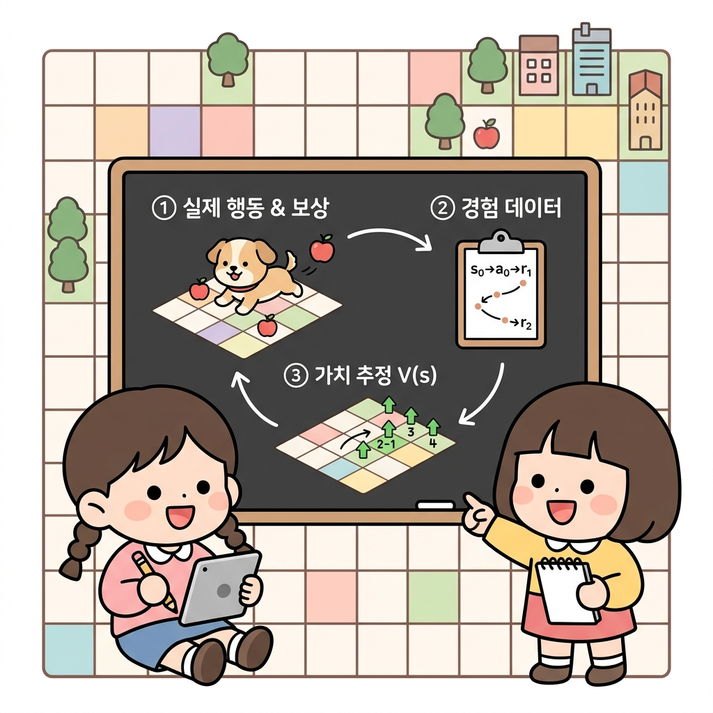
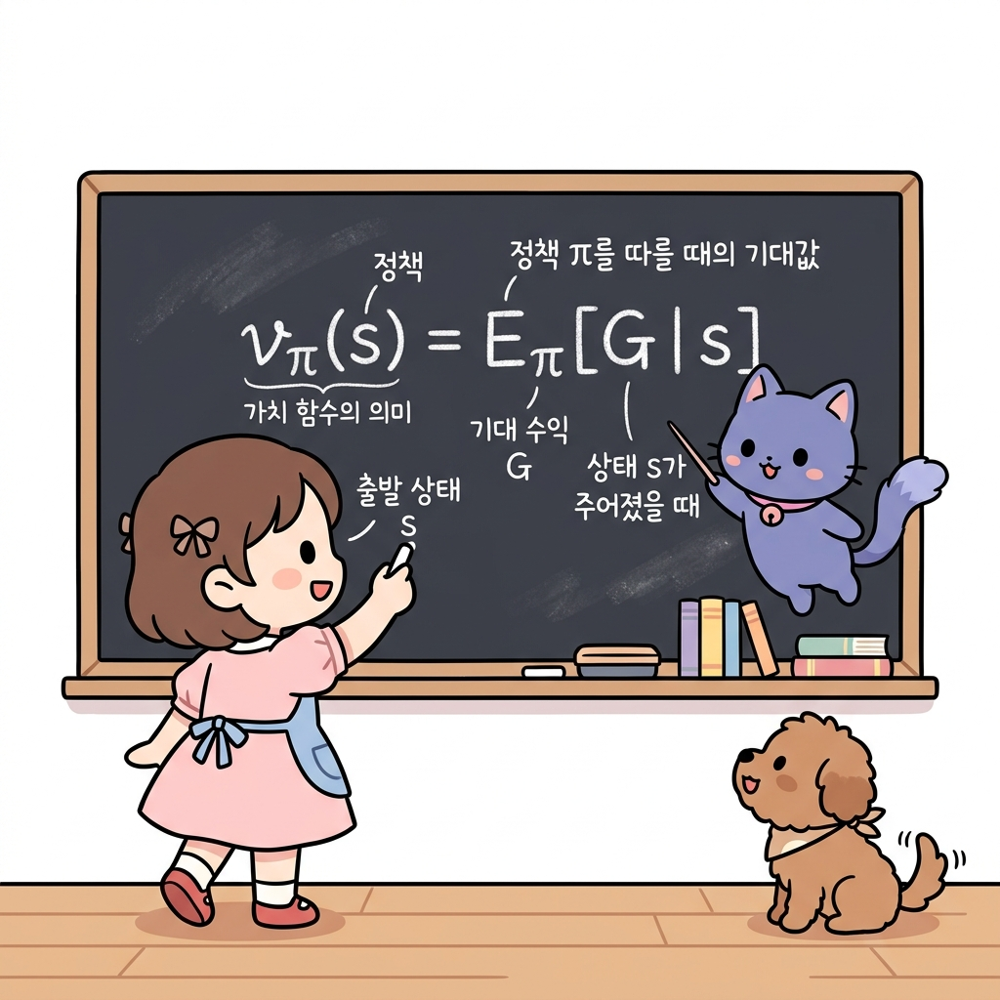
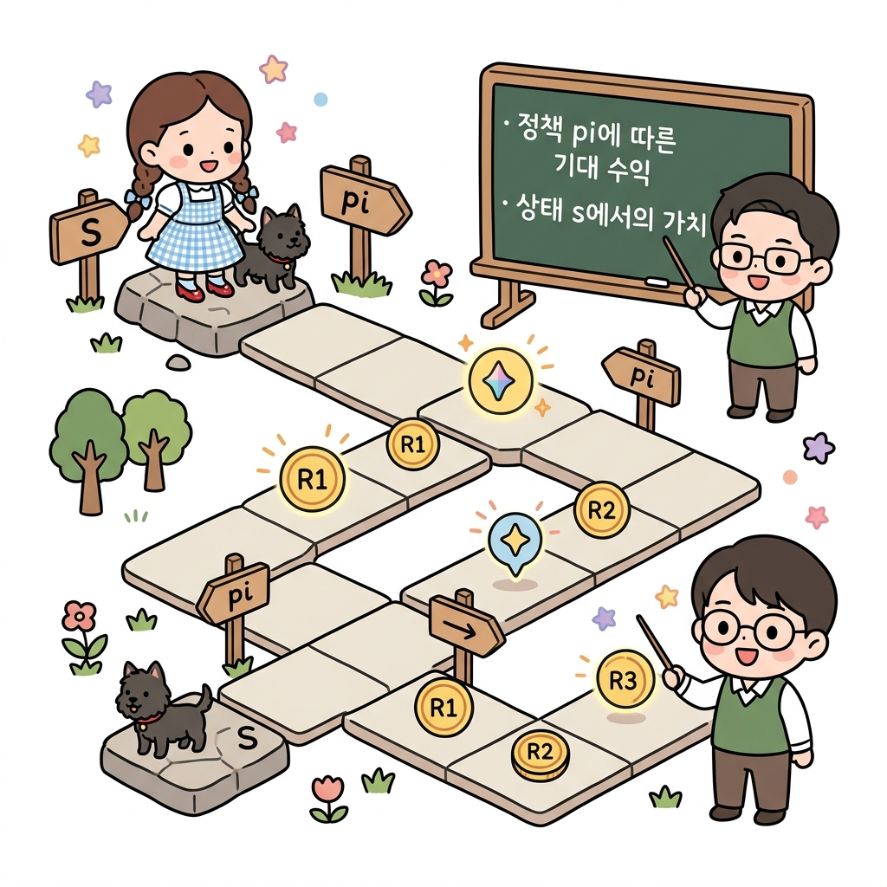
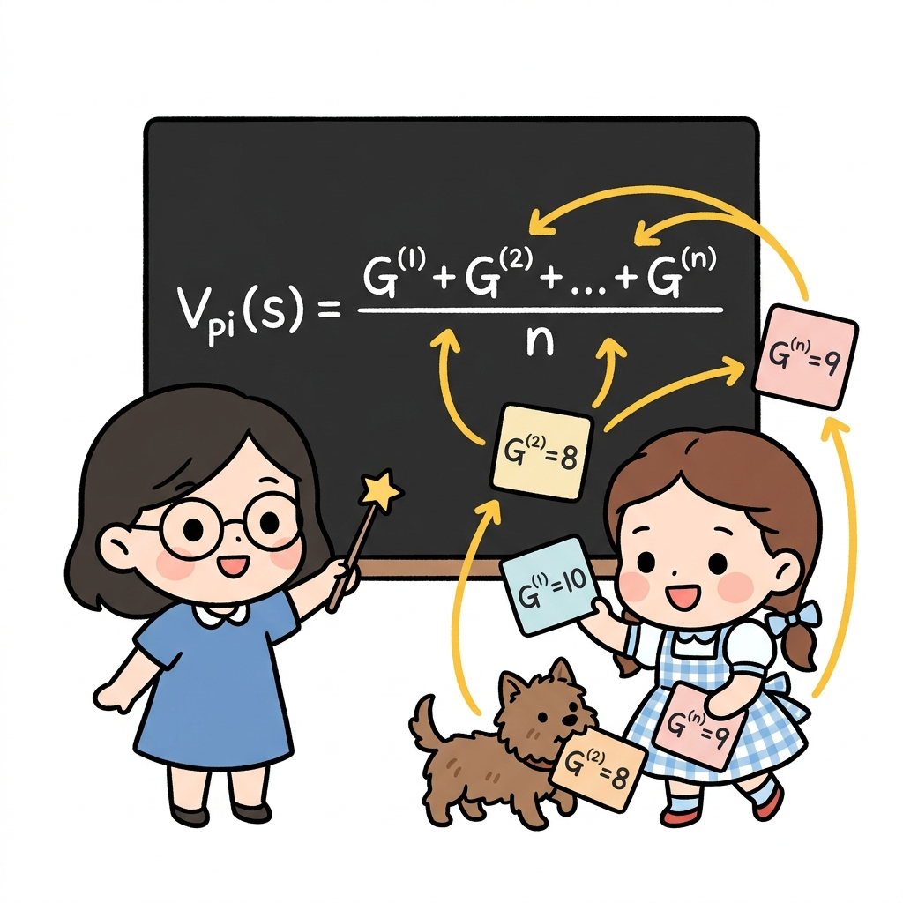
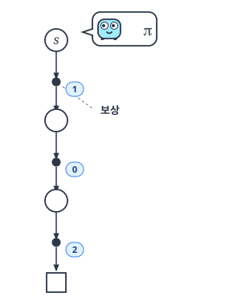
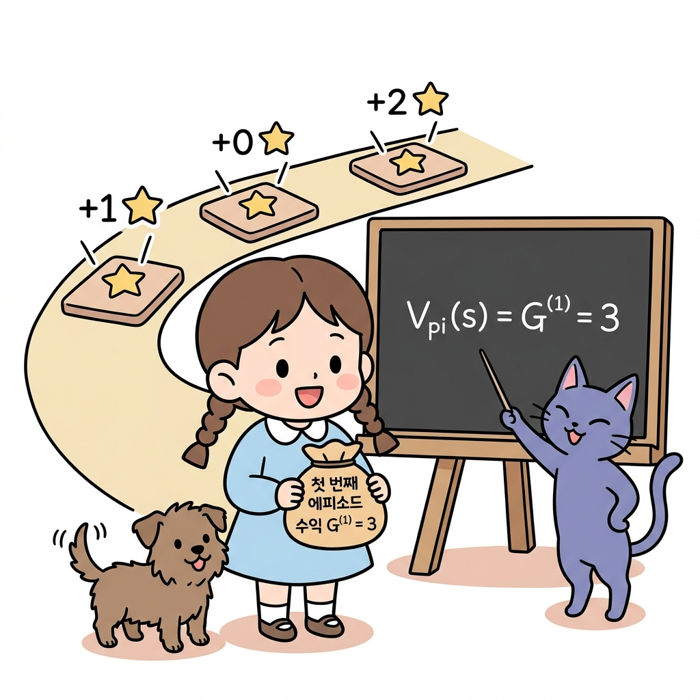
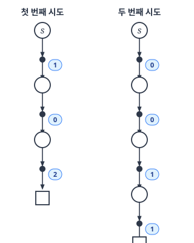
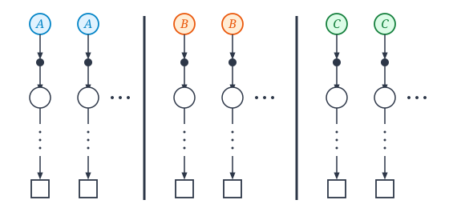
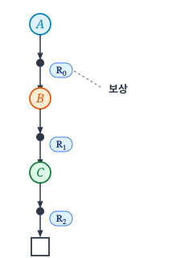
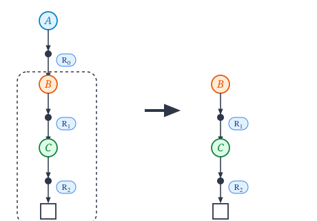

09.2 몬테카를로법으로 정책 평가하기
그림 09-2 징검다리를 건너가며 에피소드를 완성하고, 지니가 공중에 띄워준 가치 카드 V(s)의 가치를 갱신해나가는 도로시
주어진 정책 π에 따라 에피소드 시뮬레이션을 반복하여 상태 가치 함수 V(s)를 근사하는 정책 평가(Policy Evaluation) 과정을 배웁니다. 징검다리를 끝까지 건너는 다수의 에피소드 표본 데이터를 기반으로, 각 칸의 기대 가치 카드를 완성해 나가는 도로시의 즐거운 모험을 지니와 함께 살펴봅시다!
앞서 몬테카를로법에 대해 배웠습니다.
몬테카를로법은 실제로 샘플링을 하고 샘플 데이터로부터 기댓값을 계산합니다.
물론 이 방법은 강화 학습 문제에도 적용할 수 있습니다. 즉, 에이전트가 실제로 행동하여 얻은 경험(샘플 데이터)으로 가치 함수를 추정할 수 있습니다.
그림 09-2-1 에이전트가 직접 환경을 탐색하며 수집한 경험 데이터를 기반으로 각 상태의 가치 함수 V(s)를 점진적으로 업데이트하는 몬테카를로 평가 루프

이번 절에서는 정책 π가 주어졌을 때, 그 정책의 가치 함수를 몬테카를로법으로 계산합니다. 한편 이번 절에서는 ‘정책 평가’까지만 진행하고 최적 정책을 찾는 ‘정책 제어’는 5.4절에서 진행합니다.
09.2.1 가치 함수를 몬테카를로법으로 구하기
먼저 가치 함수를 복습해보죠.
가치 함수는 다음 식으로 표현됩니다.
\[v_{\pi}(s) = \mathbb{E}_{\pi} [G \mid s]\][식 6.1]
그림 09-2-2 가치 함수 vπ(s)의 수학적 정의식과 각 변수(상태 s, 기댓값 E, 기대 수익 G)의 의미

상태 s에서 출발하여 얻을 수 있는 수익을 G로 나타냈습니다
(수익은 할인율을 적용한 보상들의 합입니다).
가치 함수 vπ(s)는 [식 6.1]과 같이 ‘정책 π에 따라 행동했을 때 얻을 수 있는 기대 수익’으로 정의됩니다.
그림 09-2-3 시작 상태 s에서 임의의 정책 화살표(π)를 따라 모험하며 경로 위의 보상(R1, R2, R3)들을 획득하여 계산되는 기대 수익의 시각화

이번 절에서는 일회성 과제를 가정하여 언젠가는 목표에 도달하는 경우를 알아보겠습니다.
이제 [식 6.1]의 가치 함수를 몬테카를로법으로 계산해보죠.
이를 위해 에이전트에게 정책 π에 따라 실제로 행동을 취하도록 합니다. 이렇게 해서 얻는 실제 수익이 샘플 데이터이고, 이런 샘플 데이터를 많이 모아서 평균을 구하는 것이 몬테카를로법입니다.
수식으로는 다음과 같습니다.
\[V_{\pi}(s) = \frac{G^{(1)} + G^{(2)} + \dots + G^{(n)}}{n}\][식 6.2]
그림 09-2-4 수집한 여러 에피소드의 실물 수익 카드(G(1), G(2), …, G(n))들의 누적 합을 총 횟수 n으로 나누어 기댓값 V_pi(s)를 점진적으로 계산하는 표본 평균 연산

상태 s에서 시작하여 얻은 수익을 G로 표기하고, i번째 에피소드에서 얻은 수익을 G(i)로 표기했습니다.
몬테카를로법으로 계산하려면 [식 6.2]와 같이 에피소드를 n번 수행하여 얻은 샘플 데이터의 평균을 구하면 됩니다.
CAUTION_ 몬테카를로법은 일회성 과제에서만 이용할 수 있습니다. 지속적 과제에는 ‘끝’이 없기 때문에 수익의 샘플 데이터, 즉 [식 6.2]의 G(1), G(2) 등이 확정되지 않습니다.
구체적인 예를 보겠습니다.
에이전트가 [그림 09-5]와 같이 행동하는 경우를 생각해보시다.
그림 09-5 에이전트의 시도(○ = 상태, ● = 행동, □ = 목표, 숫자 = 실제 얻은 보상)

[그림 09-5]는 에이전트가 상태 s에서 출발하여 정책 π에 따라 행동한 결과를 나타냅니다.
첫번째 시도
그림과 같이 이번 예에서 얻은 보상이 1, 0, 2라고 가정하죠. 할인율 γ를 1로 가정하면 상태 s에서의 수익을 다음과 같이 구할 수 있습니다.
\[G^{(1)} = 1 + 0 + 2 = 3\]그림 09-2-3-b 첫 번째 시도에서 차례대로 획득한 보상(+1, +0, +2)들의 총합으로 계산된 첫 번째 에피소드 수익 G(1) = 3

이것이 첫 번째 샘플 데이터입니다.
이 시점에서의 가치 함수는 다음과 같이 추정할 수 있습니다.
\[V_{\pi}(s) = G^{(1)} = 3\]두번째 시도
이어서 두 번째 시도는 [그림 09-6]처럼 진행됐다고 해봅시다.
그림 09-6 에이전트의 두 번째 시도

그림 09-2-3-c 동일한 상태에서 모험을 시작했음에도 매 시도마다 획득 경로와 보상(+0, +0, +1, +1)이 다르게 나타나는 확률적 가치 추정의 세계
이번에는 상태 s에서 시작하여 0, 0, 1, 1의 보상을 얻었습니다.
이처럼 똑같이 상태 s에서 시작해도 보상 액수는 다를 수 있습니다. 에이전트의 정책이 확률적일 수도 있고 환경의 상태 전이가 확률적일 수도 있기 때문이죠.
둘 중 하나라도 확률적이라면 시도할 때마다 보상이 확률적으로 달라집니다. 이처럼 값(보상)이 확률적으로 달라질 때 몬테카를로법을 이용합니다.
[그림 09-6]에서 두 번째 에피소드의 수익은 다음과 같습니다.
\[G^{(2)} = 0 + 0 + 1 + 1 = 2\]1차 수익 G(1)이 3이고 2차 수익 G(2)가 2이므로, 평균은 2.5입니다.
\[\frac{G^{(1)} + G^{(2)}}{2} = \frac{3+2}{2} = 2.5\]즉, 이 시점의 가치 함수 Vπ(s)는 2.5가 됩니다.
이처럼 실제로 행동하여 수익의 평균을 구함으로써 Vπ(s)를 근사할 수 있습니다.
그림 09-2-3-d 수많은 에피소드 시도에서 얻은 다양한 수익 주머니들(G(1), G(2), G(3) …)을 모두 모아 평균을 내어 참 가치값 2.5에 점점 근사해가는 과정
그리고 시도 횟수를 늘리면 근사치의 정확도가 높아집니다.
09.2.2 모든 상태의 가치 함수 구하기
지금까지는 하나의 상태에만 주목하여 그 상태에서의 가치 함수를 몬테카를로법으로 구했습니다.
이번에는 모든 상태에서의 가치 함수를 구해보겠습니다.
단순하게 생각하면 시작 상태를 바꿔가며 앞 절의 과정을 반복하면 될 것입니다.
예를 들어 상태가 총 세 가지(A, B, C)라면 각 상태의 가치 함수를 [그림 09-7]처럼 구할 수 있습니다.
그림 09-7 각 상태에서 출발하여 수익을 구하는 예

[그림 09-7]과 같이 각 상태에서부터 출발하여 실제로 행동을 수행하고 샘플 데이터를 수집합니다.
그런 다음 각 상태에서의 수익을 평균하면 가치 함수를 구할 수 있습니다.
하지만 계산 효율이 매우 떨어지는 방법입니다.
각 상태의 가치 함수를 독립적으로 구한다는 점에서 개선의 여지가 있어 보입니다. 예를 들어 상태 A에서 시작하여 얻은 수익(샘플 데이터)은 Vπ(A)를 계산하는 데만 사용되며, 다른 가치 함수 계산에는 기여하지 않습니다.
NOTE_ [그림 09-7]과 같은 방법은 시작 상태를 원하는 대로 설정할 수 있는 문제에만 적용할 수 있습니다. 예를 들어 시뮬레이터를 이용한 문제나 게임에서는 에이전트의 시작 위치를 임의로 설정할 수 있습니다. 하지만 현실 세계의 문제에서는 임의 설정이 불가능할 수 있습니다.
그럼 좀 더 효율적인 방법을 찾아보죠.
우선 다음 예를 생각해봅시다.
그림 09-8 상태 $A$에서 시작하여 정책 π에 따라 행동하는 예

[그림 09-8]은 상태 A에서 출발하여 정책 π에 따라 행동한 결과입니다.
A, B, C 순서로 상태를 거쳐 목표에 도달했다고 가정했습니다.
도중에 얻은 보상을 R0, R1, R2로 가정했고요. 이 과제의 할인율을 γ라고 하면 상태 A에서 출발하여 얻는 수익은 다음 식으로 표현됩니다.
\[G_A = R_0 + \gamma R_1 + \gamma^2 R_2\]이것이 상태 $A$를 시작 위치로 했을 때의 수익입니다.
다음으로 [그림 09-9]의 오른쪽, 즉 상태 $B$로부터 아래로의 전이에 주목해보죠.
그림 09-9 상태 $B$부터의 전이

그림의 오른쪽 부분은 상태 B에서 시작하여 얻은 수익의 샘플 데이터로 볼 수 있습니다.
보상으로 R1과 R2를 얻었으므로 상태 B에서 시작했을 때의 수익은 다음과 같습니다. \(G_B = R_1 + \gamma R_2\)
마찬가지로 상태 $C$에서 시작했을 때의 수익은 다음과 같습니다.
\[G_C = R_2\]이와 같이 ‘한 번의 시도’만으로 ‘세 가지 상태에 대한 수익(샘플 데이터)’을 얻었습니다.
NOTE_ 에이전트의 시작 위치가 고정되어 있더라도 에피소드를 반복하는 동안 모든 상태를 경유할 수 있다면 모든 상태에 대한 수익 샘플 데이터를 수집할 수 있습니다. 예를 들어 에이전트가 무작위로 행동한다면 에피소드를 반복하면서 다양한 상태로 전이할 것이고, 결국 모든 상태를 경유할 수 있습니다. 그렇다면 에이전트의 시작 상태를 임의 위치에 설정할 필요가 없습니다.
09.2.3 몬테카를로법 계산 효율 개선
마지막으로 수익을 효율적으로 계산하는 방법에 대해 보충하겠습니다. [그림 09-8]의 예에서 우리는 다음 세 가지 수익을 계산해야 합니다.
\[\begin{aligned} G_A &= R_0 + \gamma R_1 + \gamma^2 R_2 \\ G_B &= R_1 + \gamma R_2 \\ G_C &= R_2 \end{aligned}\]특별히 어려운 계산은 아니지만 개선의 여지가 있습니다. 먼저 식을 다음과 같이 변형합니다.
\[\begin{aligned} G_A &= R_0 + \gamma G_B \\ G_B &= R_1 + \gamma G_C \\ G_C &= R_2 \end{aligned}\]주목할 곳은 GA 계산에 GB를 이용하는 부분입니다. 마찬가지로 GB 계산에는 GC를 이용했죠. 이 패턴을 응용하면 중복 계산을 없앨 수 있습니다. 계산을 뒤에서부터, 즉 다음과 같이 GC, GB, GA의 순서로 계산하면 됩니다.
\[\begin{aligned} G_C &= R_2 \\ G_B &= R_1 + \gamma G_C \\ G_A &= R_0 + \gamma G_B \end{aligned}\]이와 같이 먼저 GC를 구합니다. 다음으로 GC를 이용하여 GB를 구하고, GB를 이용하여 GA를 구합니다. 이렇게 수익을 뒤에서부터 구하면 중복 계산이 사라집니다.
지금까지 몬테카를로법을 이용한 정책 평가를 알아보았습니다.